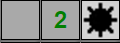
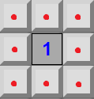
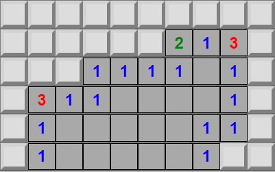
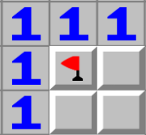

Although it has been around for decades. MineSweeper is a game with a rule set that can be a bit confusing to wrap your head around.
In brief, this tutorial will walk you through how to play MineSweeper and provide a couple tricks to get you off on the right foot!
MineSweeper consists of a sea of tiles. Each one of these tiles constitutes one of 3 things. A number, a blank space, or a mine. If you click a mine, the game is over!

A number tile denotes how many tiles adjacent to that one contains a mine. For the example below, the "1" demonstrates that one and only one of the 8 surrounding adjacent tiles contains a mine.

A blank space indicates there are no mines adjacent to the given tile. Blank tiles also reveal all adjacent blank tiles and all numeric tiles adjacent to the adjacent blank tiles, making them invaluable!

Mine tiles are scattered all over the playfield. The number in the top right indicates how many mines are left in the field, flagging tiles you are convinced are mines will decrease this counter. To flag/unflag a mine simply left-click on a tile. Flagging a mine prevents the tile from being selecte. Try not to flag tiles that you can't be certain are mines!
Try it out:
Now that you've mastered the basics, let's take a peak at a couple strategies.
Often you will see areas similar to the picture below. In other words, a space with a "1" that only has one covered tile adjacent to it. This space is definitely a mine.

Likewise if you have a space with a "2" in a arranged as below. You can flag the tile right below (marked with a superscript 2) as it is most certainly a mine.
Can you guess what the blank tile is?
Certainly not a mine!
The above rule can be applied to any number of cascading sequential mine blocks as seen below.
Now you have the gist of MineSweeper! Go ahead and close the help window and start sweeping!